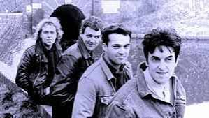
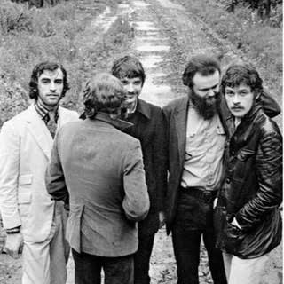
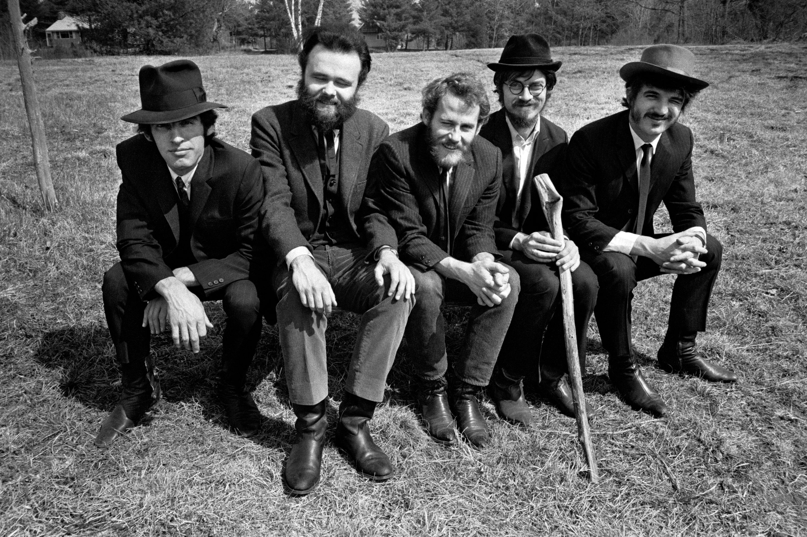

| David sundin | David sundin var och är Carls allra bästa vän och det var framförallt dem två som fick igång bandet från första början. David hade en enorm charm och deltog i mpnga tv program vilket också spred den framgång bandet hade uppnåt. |
|---|---|
| Anna berg | Anna berg hade en långvarig relation med David sundin vid sin tid i bandet där hon på så sätt blev en del av dem 4 stora. Hennes talang inom sång och röst fick stor uppmärksamhet och kan vara en av dem stora anledningar till bandets framgång inom musiken |
| Carl von essen | Carl von essen är grundaren till allt enda sen hans uppväxt inom de norrländska skogarna har musiken inspirerat honom. Tillslut vilel han skapa något nytt någonting eget. han förklarade iden för sin kompis david sundin som snabbt var på. |
| Frida stål | Frida föddes i centrala stokcholm 1978 och hade sin uppväxt precis som många andra där. Efter hennes skolgång inom gymnasiet träffade hon Anna berg som sedan skulle bli hennes väg in i bandet Stars of heaven som skulle tillkomma |


